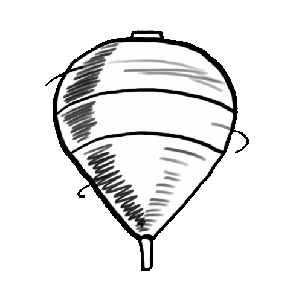
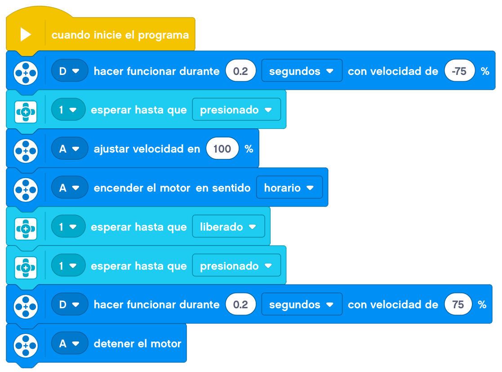

Vamos a construir un lanza peonzas.

Construiremos una máquina que sea capáz de hacer girar una peonza.
Tendrá una zona donde podamos enganchar la peonza, y la máquina la hará girar mediante un motor y con otro
motor la levantará para soltar la peonza.
La construcción de la peonza será la que nos haga ganar o no el juego.
A continuación, mostraremos un ejemplo de construcción de un lanza peonzas.
Le añadimos el cableado y tendríamos el lanza peonzas terminado.
La programación podría ser la siguiente.

Nuestro lanza peonzas terminado funcionaría de la siguiente forma.